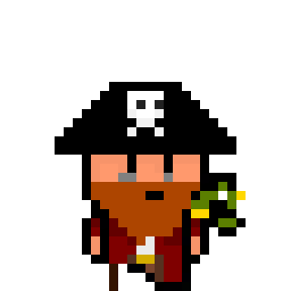
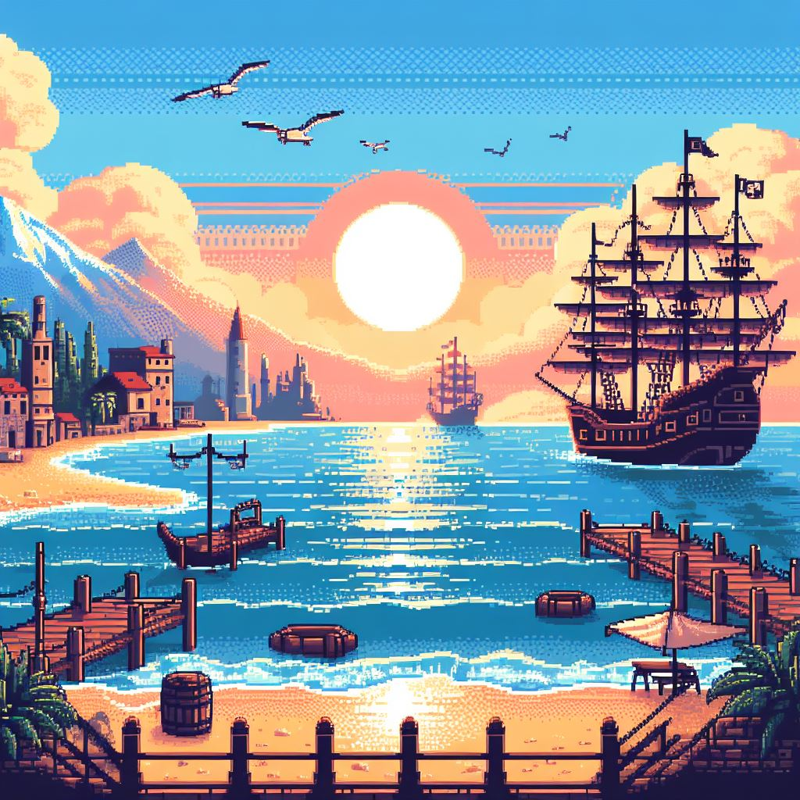

Pirate Pier Pursuit
Survive the pier, Escape the sands and conquer the sea
Use the UP and Down arrows to move
Every obstacle avoided seems to increase you Captain reputation by 5 points

Stats
0
3
